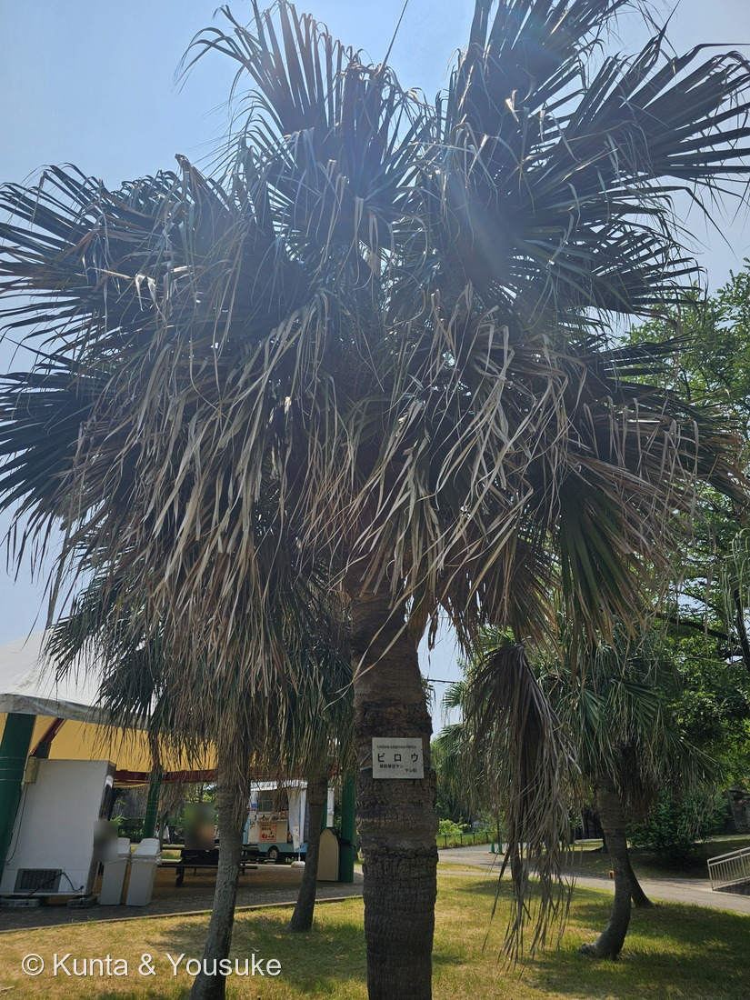
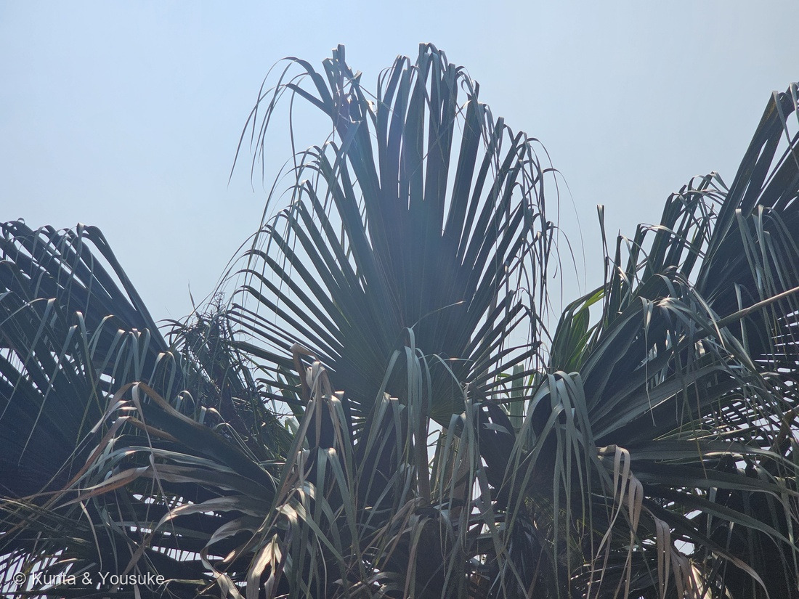
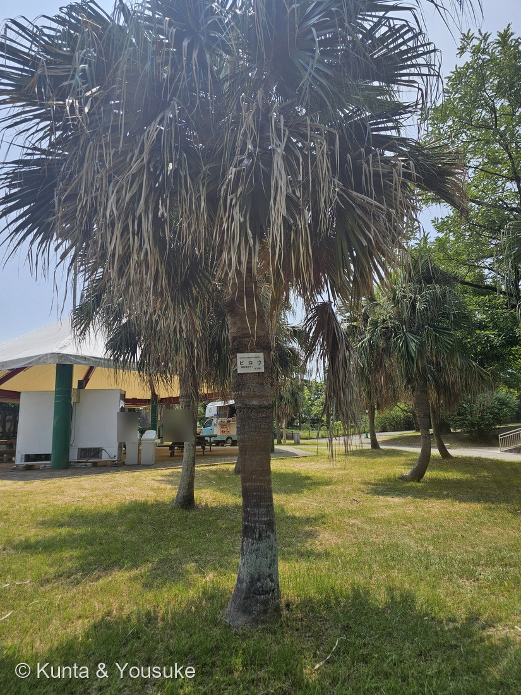
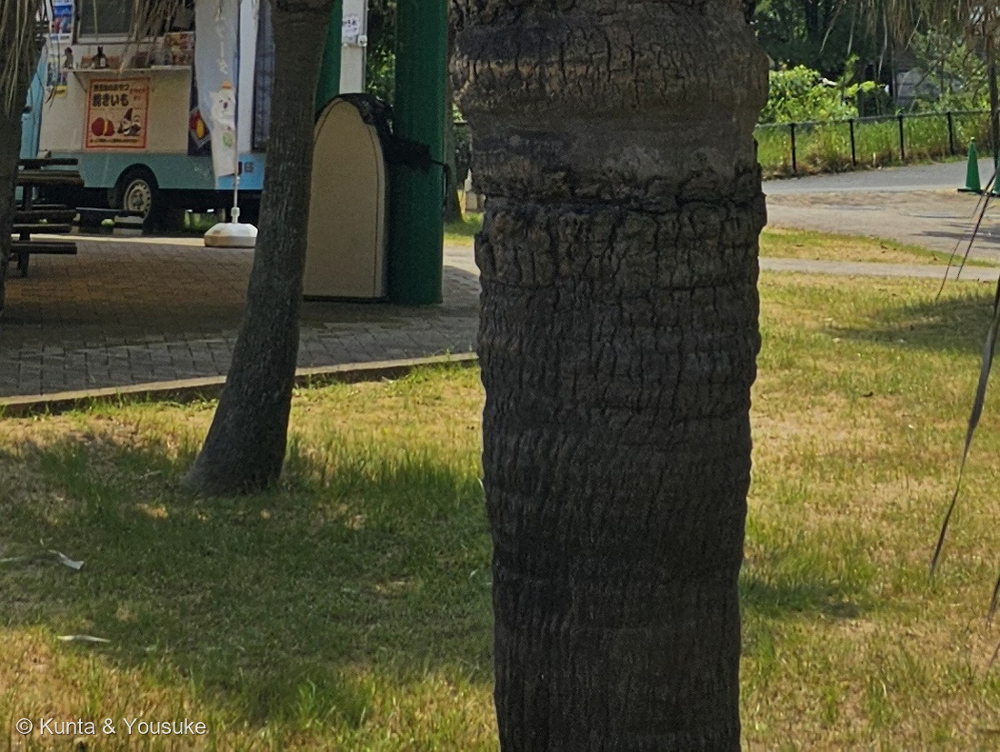

地図を読み込んでいるよ…
🔍 写真も地図も、押しているあいだ拡大して見られるよ（スマホは指を置いてすこし待ってね）。
🌍 の地図＝この子がもともと自生している場所を緑に。東アジアの亜熱帯の海岸ぞい。日本では四国南部・九州南部・南西諸島・小笠原諸島、ほかに台湾と中国南部。くわしくは下の地図の説明を見てね。
⭐東アジアの、あたたかい海岸の木だよ。海洋博公園（沖縄）は「四国南部、九州、琉球列島、台湾、中国南部」とし、日本語版Wikipediaは「東アジアの亜熱帯の海岸付近に自生」「南西諸島・小笠原諸島・九州南部・四国南部」とする。⚠出典が「九州」と「九州南部」で割れているので、ここでは狭いほう（宮崎・鹿児島）に合わせた＝⭐ちがう読み方をしたことを書いておくね。⚠⚠小笠原諸島（東京都）は塗っていない――地図は都道府県までしか塗れないので、東京都を緑にすると関東ぜんたいに生えているように見えてしまうから。⭐ほんとうは、ずっと南の島にいるよ。⭐⭐そして、この緑をいちばん正しく読むなら「海岸付近」の4文字のほう――県ぜんぶではなく、海の近くの林とそのふちに立っている木。⭐⭐⭐この「海岸ぞい」が、古事記の歌ともつながっているんだ＝仁徳天皇が淡路島から島々をながめて「阿遲摩佐（あぢまさ）の島も見ゆ」と詠んだ＝⭐海の上から、木で島が分かるくらい岸に立っていたということだと思う。⚠ぼくらが会ったのは長崎の動植物園に植えられた木＝この緑のすぐ外側だよ（⭐長崎県は塗っていない）。⭐⭐もうひとつ大事なこと＝この木はよその土地では困りものになっている＝英語版Wikipediaは「バミューダ、ハワイ、フロリダの湿地、いくつかのカリブの島々」で雑草や侵略的外来種になりうるとする。⭐その場所は、この地図には塗っていないよ。⭐同じヤシ科の192 ワシントンヤシはアメリカ南西部からメキシコの子＝⭐⭐ふたりの地図をならべると、掌のような葉が地球の反対側で二度べつべつに現れたことが見えるよ。
⚠ 地図は国（日本と中国だけ県・省）までしか塗れないから、ほんとうの分布より広く見えていることがあるよ。地図はだいたいの場所。正確なところは、上の文を見てね。
ビロウ（蒲葵）
Livistona chinensis (Jacq.) R.Br. ex Mart.
⭐古名はアヂマサ（阿遲摩佐）／ホキ（蒲葵の音）／⭐⭐沖縄ではクバ ── 英名 Chinese fan palm・fountain palm（噴水のヤシ） 原産 東アジアの亜熱帯の海岸ぞい
ヤシ科 · Arecaceae（ビロウ属 Livistona・ヤシ目 Arecales）── ⭐図鑑で2人目のヤシ科（192 ワシントンヤシにつづく）／⭐⭐ビロウ属ははじめて／⚠科は増えないので100科のまま
燻太さんの問い「シュロでもワシントンヤシでもない掌の形の葉をつけるヤシ。この子だけの特徴はどこなんだろう。難しいね。葉のつき方とかかな？」── ⭐⭐⭐⭐「葉のつき方」は当たっていた。そして「難しいね」も、正しかったんだ
⭐ 名前と学名の由来 ── よその木とまちがえられた名前
⭐⭐⭐ この子の名前は、まちがいから生まれているんだ。
- ⭐⭐「ビロウ」の由来＝植木ペディアは「東南アジアに分布するビンロウジュと混同され、ビンロウジュの漢名『檳榔』の音読みが転訛し、ビロウと呼ばれるようになった」とする。⭐つまり別の木の名前が、なまってこの木についた。
- ⭐⭐⭐もともとの日本の名前は「アヂマサ」（日本語版Wikipedia「古名はアヂマサ」）。⭐この名前の話は、下の物語の節に書いたよ。
- ⭐⭐沖縄では「クバ」。⭐こちらの名前も、下の節でとても大事になる。
- ⭐属名 Livistona＝「Robert Brown named the genus Livistona after Patrick Murray (1634–1671), Baron of Livingston, a botanist and horticulturist」（英語版Wikipedia）＝⭐スコットランドの植物学者・園芸家 パトリック・マレー（リビングストン男爵）にちなむ。⭐ロバート・ブラウンが1810年に立てた属だよ。
- ⭐⭐英名がふたつあって、どちらもこの木の姿を言っている＝Chinese fan palm（中国の扇のヤシ）と fountain palm（噴水のヤシ）（英語版Wikipedia）。⭐⭐写真②を見ると、噴水のほうがぴったりだと思わない？
⭐⭐ この植物のこと ── 神さまが下りてくる木
⭐⭐⭐⭐ この木は、日本の南のほうでただの木ではなかった。――⭐海洋博公園（沖縄）の植物図鑑が、はっきりこう書いている。
神木として天の神様が高いビロウを伝って地上へ下りると信じられていたため、沖縄の御嶽や拝所でよく見られる。
- ⭐⭐だから沖縄では「ビロウの木の下が拝所である」（日本語版Wikipedia）。⭐木そのものが、天と地をつなぐ道だと考えられていたんだね。
- ⭐⭐そして暮らしの道具でもあった＝「葉はクバ笠や団扇、柄杓などを、幹は家屋の床板や桶などをつくる材料として古くから利用されてきた」（海洋博公園）。⭐沖縄最古の歌謡集「おもろそうし」にも出てくるそうだよ。
- ⭐⭐⭐本土でも、この葉は身分のしるしだった＝「檳榔毛（びろうげ）の車」＝ビロウの葉で屋根を葺いた牛車で、公卿（上級貴族）に許されたもの（日本語版Wikipedia・植木ペディア）。
- ⭐大きさ＝「幹は１本で枝分かれせず、年輪もない。先端が伸び続けて樹高８～２０ｍ、直径３０～６０㎝」（植木ペディア）。⚠日本では最大5mほどとも。
- ⭐花は4〜5月で「黄緑色で小さく、独特の臭気がある」（日本語版Wikipedia）。⭐実は10〜11月に「金属のような光沢のある黒緑色」に熟す（植木ペディア）。
- ⚠⚠ひとつ、影の話も書いておくね。――英語版Wikipediaは、この木が「can become a weed, or in some ecosystems an invasive species, in places such as Bermuda, Hawaii, Florida wetlands and on some Caribbean Islands」とする＝バミューダ・ハワイ・フロリダの湿地・カリブの島々では侵略的外来種になりうる。⭐神さまの木が、よその島では困りものになっている――⚠どちらも同じ木なんだ。
⭐ 同定について ── 属までは写真で決まる。種は名札に乗っている
⭐ 園の名札があるので、これは確認だよ。⚠でも樹木は厳しめに見る約束（087 ヤマモモ）だから、写真からどこまで言えるかを、証拠の強い順に書くね。
- ⭐⭐⭐いちばん強い＝園の名札（「ビロウ／Livistona subglobosa Martius／単幹掌状ヤシ ヤシ科」）。⭐「単幹掌状ヤシ」という短い説明が、そのまま形の要約になっている＝幹が1本で枝分かれせず、葉が手のひら状。
- ⭐⭐次に強い＝幹（写真④）。植木ペディアは「成木の樹皮には灰褐色をした環状の紋様が不規則に生じる」とする。⭐⭐写真④のとおりで、しかも繊維にまったく包まれていない＝⭐これがシュロを落とすいちばんの手がかりだよ（シュロの幹は暗褐色の繊維にぐるぐる包まれる）。
- ⭐⭐その次＝葉先が細かく裂けて、長く垂れ下がる（写真②）。日本語版Wikipediaは「葉先が細かく裂けて垂れ下がるのが特徴」とし、⭐そのすぐあとに「ワシントンヤシにも似るが」と書いている＝⭐⭐つまりこれが192 ワシントンヤシを落とす形質。⚠あちらは葉の切れ込みから「白い糸」が垂れるのであって、葉そのものが垂れるのではないんだ。
- ⭐弱い証拠＝葉の大きさ＝「直径1～2メートル」（日本語版Wikipedia）／「直径１ｍほどの円形」（植木ペディア）。⚠写真にものさしが写っていないので、測れてはいない。
- ⚠証拠に使わなかったもの＝葉柄のトゲ。「両縁に逆向きのトゲを持つのが特徴だが、若い葉柄ほどトゲは鋭く、成葉では消滅する」（植木ペディア）＝⚠この写真では葉柄のつけ根が重なって見えず、確かめられなかった。⏳宿題にしたよ。
⚠⚠ 落としきれなかったこと
- ⚠⚠ビロウ属は世界に28種ある（英語版Wikipedia。「As of July 2025, Plants of the World Online accepts 28 species」）。⭐そして分布はアフリカに1種／オーストラリア・南ニューギニア／東アジア・東南アジアと、大きく3つにとびとび。――⚠ぼくは、そのどれかを写真から落としきったわけではないよ。
- ⚠⚠⚠もっと正直に言うと、この子は「種を分ける特徴」そのものが、消えかけているんだ。⭐その話は、いちばん下の「学名の話」の節に書くね。
⭐⭐⭐ 物語の節 ── 仁徳天皇が「あぢまさの島」と詠んだ
⭐⭐ この木の古い名前「アヂマサ」は、古事記の歌の中に立っている。――⭐仁徳天皇が淡路島から島々をながめて詠んだ、国見の歌だよ。
淤志弖流夜 那爾波能佐岐用 伊傳多知弖 和賀久邇美禮婆 阿波志摩 淤能碁呂志摩 阿遲摩佐能 志麻母美由 佐氣都志摩美由
⭐ 読み下すと、こうなる。
おし照るや 難波の崎よ 出で立ちて 我が国見れば 淡嶋（あはしま） 淤能碁呂嶋（おのころしま） 檳榔（あぢまさ）の 島も見ゆ 放（さけ）つ島見ゆ
- ⭐⭐⭐「あぢまさの島」＝ビロウの茂る島。――⭐島の名前を数えあげていく歌のなかに、木の名前でよばれた島がまざっている。
- ⭐⭐つまり、その島は遠くから見て、ビロウの木で分かったということだと思う。⭐写真③のように何本もならんで立っていたら、海の上からでも見わけられたのかもしれないね。
- ⚠⚠正直に書いておくと、ぼくは古事記の注釈書そのものは読めていない。⭐「アヂマサ＝ビロウ」としているのは、日本語版Wikipediaの「古名はアヂマサ」という記述だよ。⭐歌の原文と読み下しは、複数のところで同じものが出ていた。
- ⭐⭐そして沖縄では、同じ木が「クバ」の名で、おもろそうしという別の古典にも出てくる（海洋博公園）。――⭐⭐⭐本土の古典と沖縄の古典、その両方に立っている木なんだ。
⭐⭐⭐⭐ 燻太さんの問い ──「葉のつき方とかかな？」は、当たっていた
⭐⭐⭐ 燻太さんが、こう聞いてくれた。
シュロでもワシントンヤシでもない掌の形の葉をつけるヤシ。この子だけの特徴はどこなんだろう。難しいね。葉のつき方とかかな？
⭐⭐⭐⭐ これがね、当たっていたんだ。――しかも、ぼくが思っていたよりずっと深いところで。
⭐⭐⭐ ヤシの「掌の形の葉」には、二種類ある
⭐⭐ 同じ「扇のような葉」に見えても、葉柄と葉身のつながり方がちがう2つの型があるんだ。
- ⭐掌状（palmate）＝フロリダ大学（UF/IFAS）の解説は「They originate from a single point at the tip of the petiole」とする＝小葉が葉柄の先の一点から出る。⭐扇が平ら。
- ⭐⭐⭐肋状掌状（costapalmate）＝「Costapalmate leaves are intermediate between pinnate and palmate leaves」「Leaflets are joined together for some or most of their length but are attached along a costa, which is an extension of the petiole into the leaf blade」（同）＝⭐⭐葉柄が葉身の中まで costa（肋）として伸びて、小葉はその肋にそって並ぶ。⭐だから扇が平らでなく、中央で折れ曲がる。
- ⭐⭐その境目にあるのが「ハスチュラ（hastula）」＝「a specialized protuberance called the hastula」（同）＝葉柄が葉身に入るところの、襟のような突起。⭐ここから先が costa なんだ。
⭐⭐⭐⭐ そして、属の記載そのものが「葉」でできていた
⭐⭐⭐ 英語版Wikipediaの Livistona 属の説明を読んで、ぼくは声が出そうになった。
the leaves with an armed petiole terminating in a rounded, costapalmate fan of numerous leaflets
⭐⭐⭐⭐ 属を決める一文が、まるごと葉の話なんだ。――「トゲのある葉柄」と「肋状掌状の丸い扇」の2つだけで、ビロウ属が言い切られている。
⭐⭐ だから燻太さんの「葉のつき方とかかな？」は、属を決める形質そのものを指していたことになる。⭐「幹への葉のつき方」ではなくて、「葉柄と葉身のつながり方」のほうだったけれどね。
⭐ 写真②をもう一度見てほしいんだ。――⭐扇が平らに開ききらず、中央が伸びて、そこから小葉が並んでいるのが分かると思う。⚠ハスチュラそのものは、葉が重なっていて見つけられなかったので、宿題にしたよ。
⚠⚠ でも、そこまでで決まるのは「属」まで
⚠⚠⚠ ここが、この回のいちばん正直に書きたいところ。――⭐costapalmate も、トゲのある葉柄も、垂れる葉先も、ビロウ属（28種）を決める特徴であって、ビロウという種だけの特徴ではないんだ。
⭐⭐ 燻太さんの「この子だけの特徴はどこなんだろう。難しいね」は、難しくて当たり前だった。――⭐次の節で、その理由がはっきりするよ。
⭐⭐⭐ 学名の話 ── 三段階で「降りて」いった名前
⚠⚠ 森きららの名札には、こう書いてある。――Livistona subglobosa Martius。⭐これは「ビロウという独立した種」という書き方だよ。⚠でも、いま調べると、こう割れている。
- ⭐名札（森きらら） ＝ Livistona subglobosa Martius ＝独立した種
- ⭐日本語版Wikipedia ＝ Livistona chinensis var. subglobosa ＝変種
- ⭐海洋博公園（沖縄） ＝ Livistona chinensis (Jacq.) R.Br. ex Mart. ＝変種を立てない
- ⭐PALMweb ＝ 「taxon included in parent taxon」＝L. chinensis に含める
⭐⭐⭐ つまり、この木の名前はだんだん「降りて」きている。――独立した種 → 変種 → 本家と同じもの。
⭐⭐⭐⭐ その理由が、いちばん面白いところ
⭐⭐ なぜ変種にされたのか。――⭐実の形だけがちがったからなんだ。
- ⭐⭐⭐種小名 subglobosa は「亜球形」＝本家の L. chinensis の実がオリーブのような形なのに対して、こちらはほぼ球形〜卵形だった。⭐それだけのちがいで、変種として残されていた。
- ⚠⚠そして、その「それだけ」が、いまは区別として弱すぎると見なされている。
⭐⭐⭐⭐ だから、燻太さんの問いへのほんとうの答えは、たぶんこうなる。
- ⭐属（ビロウ属）を決める特徴は、写真にはっきり写っている＝肋状掌状の葉・トゲのある葉柄・繊維のない幹・垂れる葉先。
- ⚠⚠この子だけの特徴は、もともと実の形ひとつしかなかった――そして、その一点も、いまは「分けるほどではない」とされつつある。
- ⭐⭐つまり「難しいね」というのは、見る側の目が足りないのではなく、分けるものが本当に少ないということだったんだ。
⭐ この図鑑では、いちばん多くの出典が落ち着いている Livistona chinensis を学名にしたよ。⚠でも名札の subglobosa がまちがいというわけではなくて、名札が作られたころの学名なんだと思う。
⚠⚠ ひとつ、届かなかったことも書いておくね。――いちばん新しい扱いを確かめたくて Kew の Plants of the World Online を開こうとしたけれど、アクセスが拒否されて本文が読めなかった。⭐だから上の4つは、名札・日本語版Wikipedia・海洋博公園・PALMweb を直接読んで並べたものだよ。
出典：九十九島動植物園 森きららの園名札（「ビロウ／Livistona subglobosa Martius／単幹掌状ヤシ ヤシ科」。⚠名札のアップは公開していないよ）／庭木図鑑 植木ペディア「ビロウ」（分布と自生地・葉が中程からさらに二つに裂けて垂れること・葉柄の断面と逆向きのトゲ・幹と環状の紋様・樹高と直径・花期と果実・和名がビンロウジュとの混同から来たこと・檳榔毛車）／日本語版Wikipedia「ビロウ」（学名を変種とする扱い・古名アヂマサ・別名ホキ・沖縄名クバ・分布・葉の直径と葉先が垂れること・葉柄の2列のトゲ・花期と花の臭気・御嶽と拝所・檳榔毛の車・ワシントンヤシとの比較）／海洋博公園（沖縄）植物図鑑「ビロウ」（学名 Livistona chinensis・原産と分布・神木として天の神様がビロウを伝って下りるという信仰・御嶽と拝所・クバ笠や団扇や柄杓や床板への利用・おもろそうし）／英語版Wikipedia「Livistona」（属名の由来＝パトリック・マレー／ロバート・ブラウン1810年・armed petiole と costapalmate による属の記載・28種・3地域にとびとびの分布）／英語版Wikipedia「Livistona chinensis」（英名 Chinese fan palm と fountain palm・分布・樹高・侵略的外来種になりうること）／フロリダ大学 UF/IFAS「Palm Morphology and Anatomy」（ENH1212/EP473）（掌状と肋状掌状のちがい・costa が葉柄の葉身への延長であること・ハスチュラ）／PALMweb（L. chinensis var. subglobosa の扱い）／古事記 下巻・仁徳天皇の御製歌（「阿遲摩佐能 志麻母美由」）